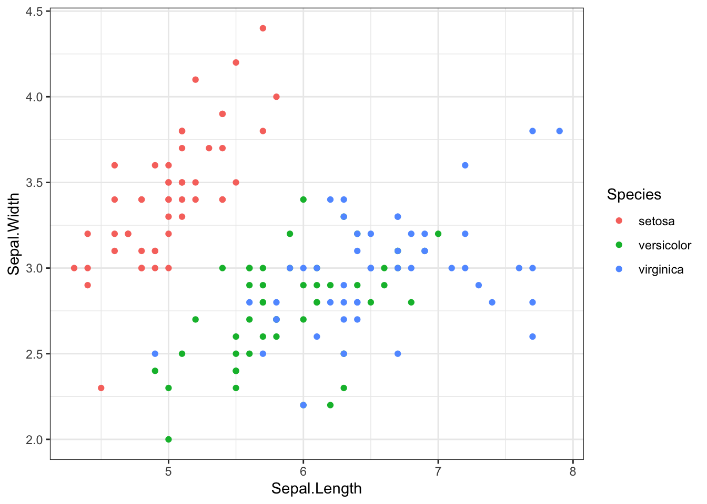
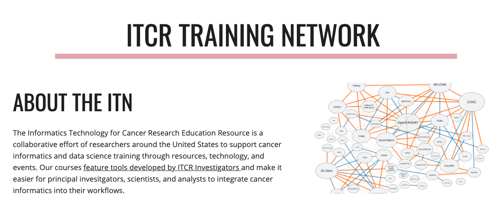
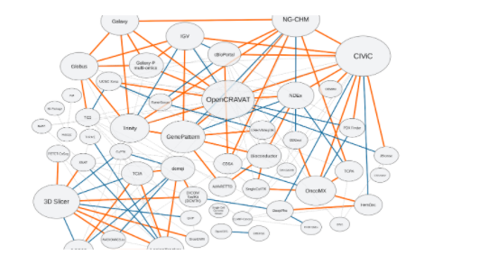

Chapter 2 Topic of Section
Text Text
2.1 Subtopic
Text Text
2.1.1 Code examples

## Saving 7 x 5 in image2.1.2 Image examples


2.1.3 Video example
Introducing Markua
2.2 Print out session info
## ─ Session info ───────────────────────────────────────────────────────────────
## setting value
## version R version 4.0.3 (2020-10-10)
## os macOS Mojave 10.14.6
## system x86_64, darwin17.0
## ui X11
## language (EN)
## collate en_US.UTF-8
## ctype en_US.UTF-8
## tz America/New_York
## date 2021-04-14
##
## ─ Packages ───────────────────────────────────────────────────────────────────
## package * version date lib source
## assertthat 0.2.1 2019-03-21 [1] CRAN (R 4.0.0)
## bookdown 0.21 2020-10-13 [1] CRAN (R 4.0.2)
## bslib 0.2.4 2021-01-25 [1] CRAN (R 4.0.2)
## cachem 1.0.1 2021-01-21 [1] CRAN (R 4.0.2)
## callr 3.5.1 2020-10-13 [1] CRAN (R 4.0.2)
## cli 2.3.1 2021-02-23 [1] CRAN (R 4.0.2)
## colorspace 2.0-0 2020-11-11 [1] CRAN (R 4.0.2)
## crayon 1.4.1 2021-02-08 [1] CRAN (R 4.0.3)
## DBI 1.1.1 2021-01-15 [1] CRAN (R 4.0.2)
## desc 1.3.0 2021-03-05 [1] CRAN (R 4.0.2)
## devtools 2.3.2 2020-09-18 [1] CRAN (R 4.0.2)
## digest 0.6.27 2020-10-24 [1] CRAN (R 4.0.2)
## dplyr 1.0.4 2021-02-02 [1] CRAN (R 4.0.2)
## ellipsis 0.3.1 2020-05-15 [1] CRAN (R 4.0.0)
## evaluate 0.14 2019-05-28 [1] CRAN (R 4.0.0)
## fansi 0.4.2 2021-01-15 [1] CRAN (R 4.0.2)
## farver 2.0.3 2020-01-16 [1] CRAN (R 4.0.0)
## fastmap 1.1.0 2021-01-25 [1] CRAN (R 4.0.2)
## fs 1.5.0 2020-07-31 [1] CRAN (R 4.0.2)
## generics 0.1.0 2020-10-31 [1] CRAN (R 4.0.2)
## ggplot2 * 3.3.3 2020-12-30 [1] CRAN (R 4.0.2)
## glue 1.4.2 2020-08-27 [1] CRAN (R 4.0.2)
## gtable 0.3.0 2019-03-25 [1] CRAN (R 4.0.0)
## here * 1.0.1 2020-12-13 [1] CRAN (R 4.0.2)
## highr 0.8 2019-03-20 [1] CRAN (R 4.0.0)
## htmltools 0.5.1.1 2021-01-22 [1] CRAN (R 4.0.2)
## jquerylib 0.1.3 2020-12-17 [1] CRAN (R 4.0.2)
## jsonlite 1.7.2 2020-12-09 [1] CRAN (R 4.0.2)
## knitr 1.31 2021-01-27 [1] CRAN (R 4.0.2)
## labeling 0.4.2 2020-10-20 [1] CRAN (R 4.0.2)
## lifecycle 1.0.0 2021-02-15 [1] CRAN (R 4.0.2)
## magrittr * 2.0.1 2020-11-17 [1] CRAN (R 4.0.2)
## memoise 2.0.0 2021-01-26 [1] CRAN (R 4.0.2)
## munsell 0.5.0 2018-06-12 [1] CRAN (R 4.0.0)
## pillar 1.5.1 2021-03-05 [1] CRAN (R 4.0.2)
## pkgbuild 1.2.0 2020-12-15 [1] CRAN (R 4.0.2)
## pkgconfig 2.0.3 2019-09-22 [1] CRAN (R 4.0.0)
## pkgload 1.1.0 2020-05-29 [1] CRAN (R 4.0.0)
## prettyunits 1.1.1 2020-01-24 [1] CRAN (R 4.0.0)
## processx 3.4.5 2020-11-30 [1] CRAN (R 4.0.2)
## ps 1.5.0 2020-12-05 [1] CRAN (R 4.0.2)
## purrr 0.3.4 2020-04-17 [1] CRAN (R 4.0.0)
## R6 2.5.0 2020-10-28 [1] CRAN (R 4.0.2)
## remotes 2.2.0 2020-07-21 [1] CRAN (R 4.0.2)
## rlang 0.4.10 2020-12-30 [1] CRAN (R 4.0.2)
## rmarkdown 2.6.6 2021-02-08 [1] Github (rstudio/rmarkdown@de0e2ec)
## rprojroot 2.0.2 2020-11-15 [1] CRAN (R 4.0.2)
## sass 0.3.1 2021-01-24 [1] CRAN (R 4.0.2)
## scales 1.1.1 2020-05-11 [1] CRAN (R 4.0.0)
## sessioninfo 1.1.1 2018-11-05 [1] CRAN (R 4.0.2)
## stringi 1.5.3 2020-09-09 [1] CRAN (R 4.0.2)
## stringr 1.4.0 2019-02-10 [1] CRAN (R 4.0.0)
## testthat 3.0.1 2020-12-17 [1] CRAN (R 4.0.2)
## tibble 3.1.0 2021-02-25 [1] CRAN (R 4.0.2)
## tidyselect 1.1.0 2020-05-11 [1] CRAN (R 4.0.0)
## usethis 2.0.1 2021-02-10 [1] CRAN (R 4.0.2)
## utf8 1.1.4 2018-05-24 [1] CRAN (R 4.0.0)
## vctrs 0.3.6 2020-12-17 [1] CRAN (R 4.0.2)
## withr 2.4.1 2021-01-26 [1] CRAN (R 4.0.2)
## xfun 0.21 2021-02-10 [1] CRAN (R 4.0.2)
## yaml 2.2.1 2020-02-01 [1] CRAN (R 4.0.0)
##
## [1] /Library/Frameworks/R.framework/Versions/4.0/Resources/libraryReferences
Xie, Yihui. 2016. Bookdown: Authoring Books and Technical Documents with R Markdown. Boca Raton, Florida: Chapman; Hall/CRC. https://github.com/rstudio/bookdown.